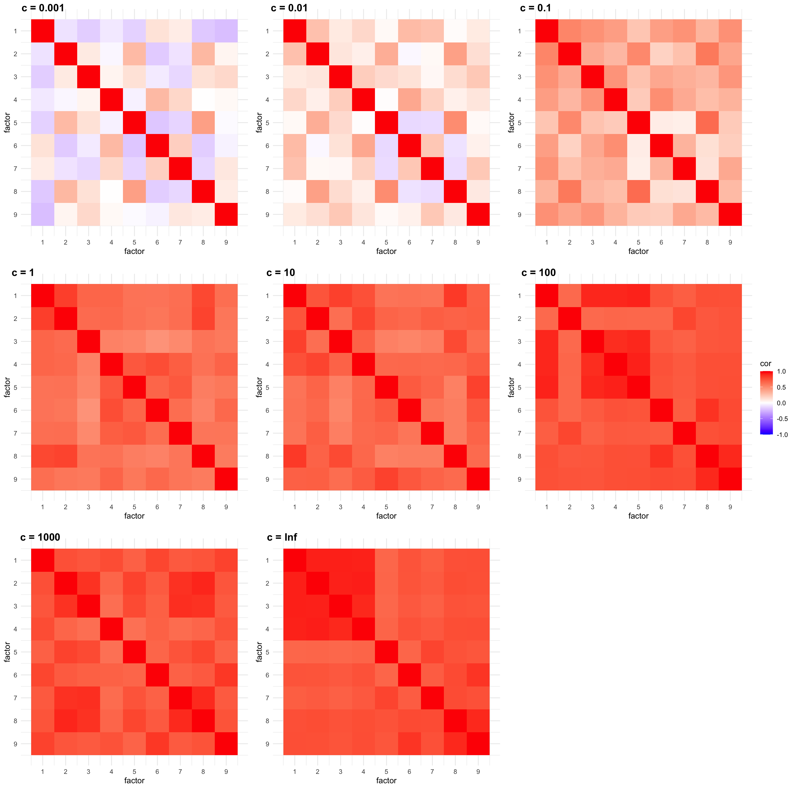
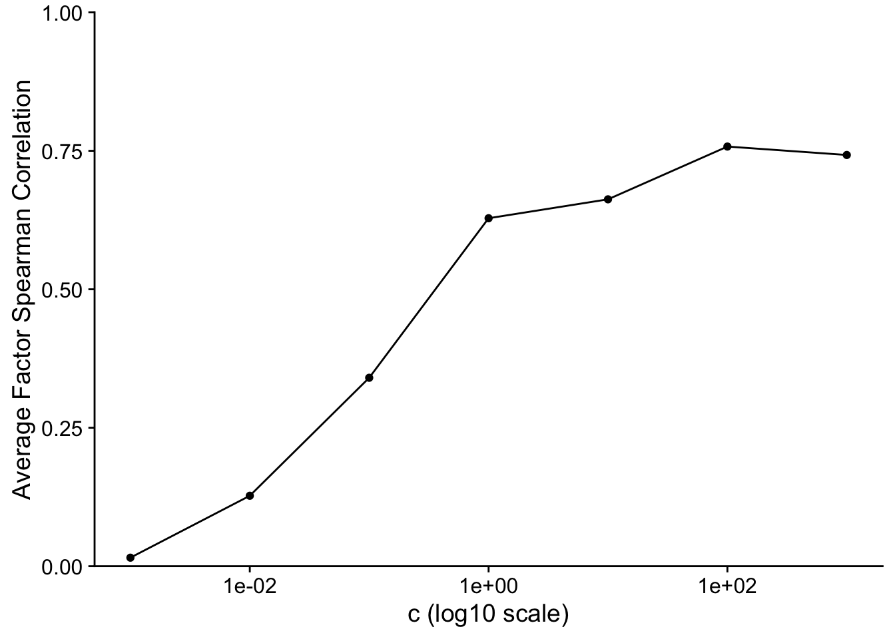
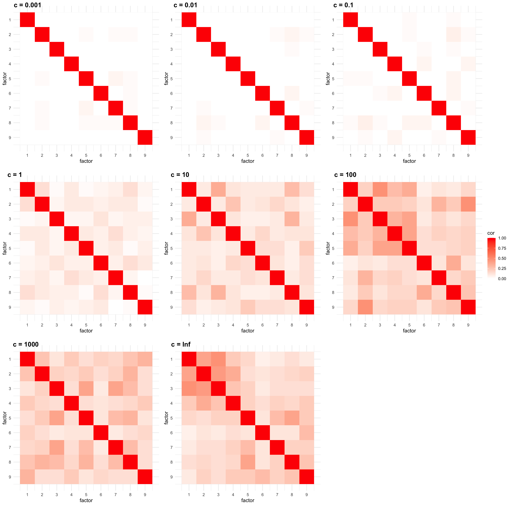
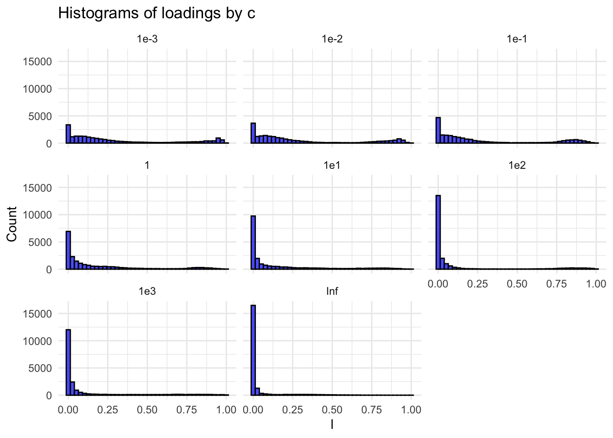
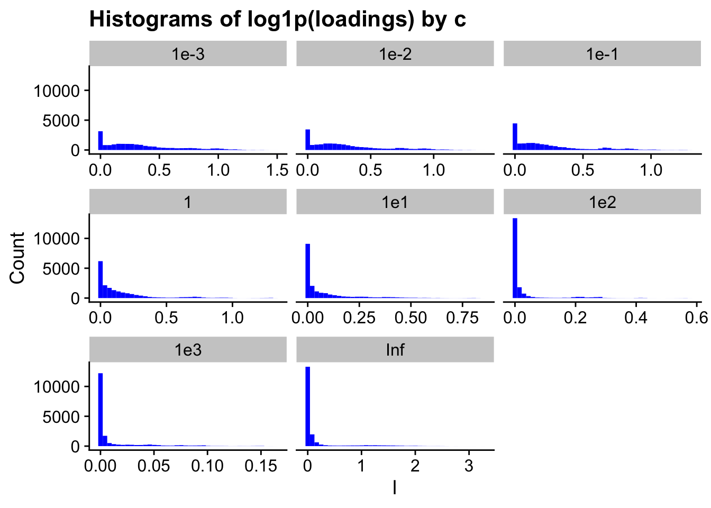
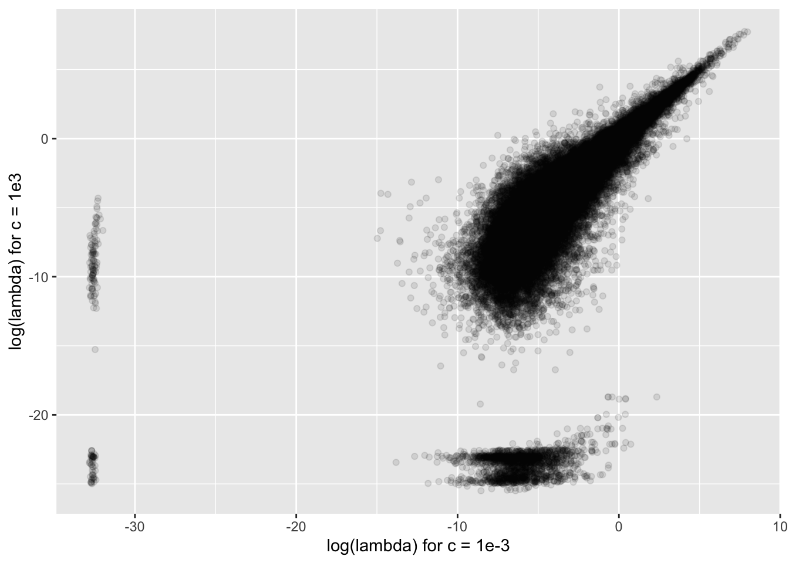
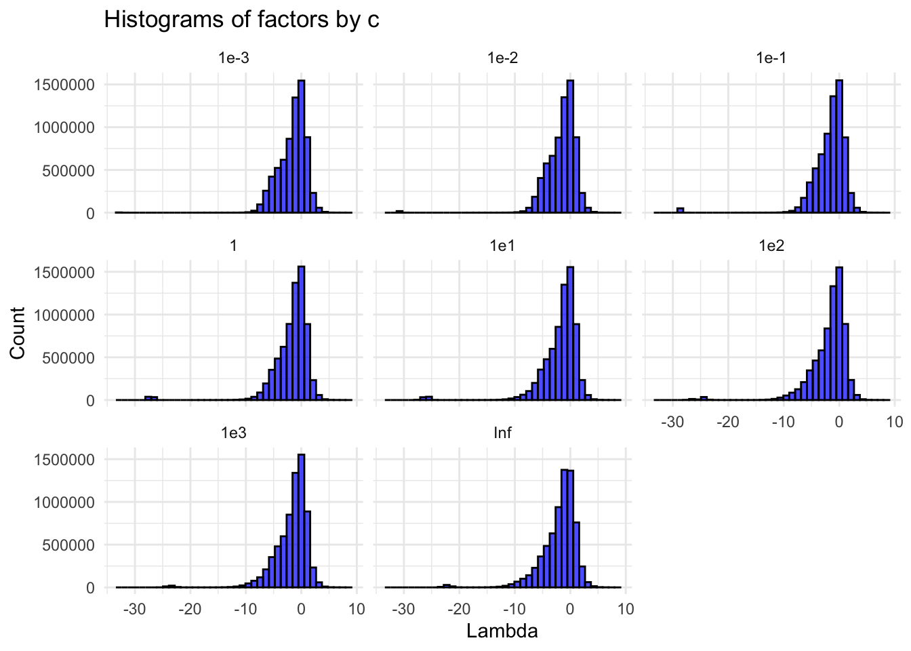

Analysis of Pancreas Cel-Seq Data
2024-12-30
Last updated: 2025-02-18
Checks: 6 1
Knit directory: log1p_experiments/
This reproducible R Markdown analysis was created with workflowr (version 1.7.1). The Checks tab describes the reproducibility checks that were applied when the results were created. The Past versions tab lists the development history.
The R Markdown file has unstaged changes. To know which version of
the R Markdown file created these results, you’ll want to first commit
it to the Git repo. If you’re still working on the analysis, you can
ignore this warning. When you’re finished, you can run
wflow_publish to commit the R Markdown file and build the
HTML.
Great job! The global environment was empty. Objects defined in the global environment can affect the analysis in your R Markdown file in unknown ways. For reproduciblity it’s best to always run the code in an empty environment.
The command set.seed(20240402) was run prior to running
the code in the R Markdown file. Setting a seed ensures that any results
that rely on randomness, e.g. subsampling or permutations, are
reproducible.
Great job! Recording the operating system, R version, and package versions is critical for reproducibility.
Nice! There were no cached chunks for this analysis, so you can be confident that you successfully produced the results during this run.
Great job! Using relative paths to the files within your workflowr project makes it easier to run your code on other machines.
Great! You are using Git for version control. Tracking code development and connecting the code version to the results is critical for reproducibility.
The results in this page were generated with repository version 93183ac. See the Past versions tab to see a history of the changes made to the R Markdown and HTML files.
Note that you need to be careful to ensure that all relevant files for
the analysis have been committed to Git prior to generating the results
(you can use wflow_publish or
wflow_git_commit). workflowr only checks the R Markdown
file, but you know if there are other scripts or data files that it
depends on. Below is the status of the Git repository when the results
were generated:
Ignored files:
Ignored: .DS_Store
Ignored: .Rhistory
Ignored: data/.DS_Store
Unstaged changes:
Modified: analysis/bbc.Rmd
Modified: analysis/pancreas.Rmd
Note that any generated files, e.g. HTML, png, CSS, etc., are not included in this status report because it is ok for generated content to have uncommitted changes.
These are the previous versions of the repository in which changes were
made to the R Markdown (analysis/pancreas.Rmd) and HTML
(docs/pancreas.html) files. If you’ve configured a remote
Git repository (see ?wflow_git_remote), click on the
hyperlinks in the table below to view the files as they were in that
past version.
| File | Version | Author | Date | Message |
|---|---|---|---|---|
| Rmd | 287cc39 | Eric Weine | 2025-02-14 | added analysis of gamma-delta |
| Rmd | 3a8950d | Eric Weine | 2025-02-13 | added nmf fit |
| html | 3a8950d | Eric Weine | 2025-02-13 | added nmf fit |
| Rmd | d4f9ec8 | Eric Weine | 2025-02-13 | added additional pancreas analysis |
| html | d4f9ec8 | Eric Weine | 2025-02-13 | added additional pancreas analysis |
| Rmd | ca596b7 | Eric Weine | 2025-01-22 | added code for nnlm fits |
| html | ca596b7 | Eric Weine | 2025-01-22 | added code for nnlm fits |
| Rmd | 44da750 | Eric Weine | 2025-01-22 | added figures for NNLM |
| html | 44da750 | Eric Weine | 2025-01-22 | added figures for NNLM |
| Rmd | 6187eaf | Eric Weine | 2025-01-20 | changed K to c |
| html | 6187eaf | Eric Weine | 2025-01-20 | changed K to c |
| Rmd | d308eae | Eric Weine | 2025-01-19 | pancreas |
| html | d308eae | Eric Weine | 2025-01-19 | pancreas |
Introduction
Here, I analyzed the pancreas Cel-Seq dataset that Peter has looked at before.
library(Matrix)
library(fastTopics)
library(ggplot2)
library(cowplot)
set.seed(1)
load("~/Downloads/pancreas.RData")
i <- which(sample_info$tech == "celseq2")
sample_info <- sample_info[i,]
counts <- counts[i,]
sample_info <- transform(sample_info,celltype = factor(celltype))
counts <- counts[, Matrix::colSums(counts) > 0]
genes_to_use <- which(Matrix::colSums(counts>0)>4)
counts <- counts[,genes_to_use]
s <- Matrix::rowSums(counts)
s <- s / mean(s)
library(passPCA)
K <- 9
cc_vec <- c(1e-3, 1e-2, 1e-1, 1, 1e1, 1e2, 1e3)
n <- nrow(counts)
p <- ncol(counts)Now, I fit the log1p model for many values of \(c\). I also fit Poisson NMF using
fastTopics. To fit each model, I first fit a rank \(1\) model. Then, I initialize each model
with \(K = 9\), where the first factor
is taken from the rank 1 model and the other \(8\) are randomly iniitalized.
for (cc in cc_vec) {
print(cc)
set.seed(1)
log1p_k1 <- fit_factor_model_log1p_exact(
Y = counts,
K = 1,
maxiter = 10,
s = cc * s,
init_method = "frob_nmf"
)
set.seed(1)
init_LL <- log1p_k1$U %>%
cbind(
matrix(
data = rexp(
n = n * (K - 1), rate = 15
),
nrow = n,
ncol = K - 1
)
)
set.seed(1)
init_FF <- log1p_k1$V %>%
cbind(
matrix(
data = rexp(
n = p * (K - 1), rate = 15
),
nrow = p,
ncol = K - 1
)
)
tictoc::tic()
set.seed(1)
fit <- fit_factor_model_log1p_exact(
Y = counts,
K = K,
init_U = init_LL,
init_V = init_FF,
maxiter = 100,
s = cc * s
)
total_time <- tictoc::toc()
fit[["total_time"]] <- total_time$toc
rownames(fit$U) <- rownames(counts)
rownames(fit$V) <- colnames(counts)
readr::write_rds(
fit, glue::glue("~/Documents/data/passPCA/pancreas/pancreas_log1p_c{cc}_k9_exact_100_iter.rds")
)
}
fit0_nmf <- fastTopics:::fit_pnmf_rank1(counts)
set.seed(1)
init_LL <- fit0_nmf$L %>%
cbind(
matrix(
data = rexp(
n = n * (K - 1), rate = 15
),
nrow = n,
ncol = K - 1
)
)
set.seed(1)
init_FF <- fit0_nmf$F %>%
cbind(
matrix(
data = rexp(
n = p * (K - 1), rate = 15
),
nrow = p,
ncol = K - 1
)
)
rownames(init_LL) <- rownames(counts)
rownames(init_FF) <- colnames(counts)
fit0_K <- init_poisson_nmf(
X = counts, F = init_FF, L = init_LL
)
fit_nmf <- fit_poisson_nmf(
X = counts,
fit0 = fit0_K,
control = list(list(nc = 7))
)
readr::write_rds(
fit_nmf, glue::glue("~/Documents/data/passPCA/pancreas/pancreas_pois_nmf_k9_exact_100_iter.rds")
)I also ran Frobenius NMF on the transformed counts \(\log(1 + y/(c \cdot s))\), where \(s\) is the same size factor used above. To attempt to keep things consistent with the Poisson models, I initialized the NMF models with the models from above after one iteration on the \(K = 9\) fits.
Y_tilde <- Matrix::Diagonal(x = 1/s) %*% counts
library(passPCA)
K <- 9
cc_vec <- c(1e-3, 1e-2, 1e-1, 1, 1e1, 1e2, 1e3)
n <- nrow(counts)
p <- ncol(counts)
for (cc in cc_vec) {
print(cc)
set.seed(1)
log1p_k1 <- fit_factor_model_log1p_exact(
Y = counts,
K = 1,
maxiter = 10,
s = cc * s,
init_method = "frob_nmf"
)
set.seed(1)
init_LL <- log1p_k1$U %>%
cbind(
matrix(
data = rexp(
n = n * (K - 1), rate = 15
),
nrow = n,
ncol = K - 1
)
)
set.seed(1)
init_FF <- log1p_k1$V %>%
cbind(
matrix(
data = rexp(
n = p * (K - 1), rate = 15
),
nrow = p,
ncol = K - 1
)
)
fit <- fit_factor_model_log1p_exact(
Y = counts,
K = K,
init_U = init_LL,
init_V = init_FF,
maxiter = 1,
s = cc * s
)
Y_tilde_cc <- MatrixExtra::mapSparse(Y_tilde, function(x){log1p(x/cc)})
nmf_fit <- nnmf(
A = as.matrix(Y_tilde_cc),
k = 9,
init = list(
W = fit$U, H = t(fit$V)
)
)
readr::write_rds(
nmf_fit, glue::glue("~/Documents/data/passPCA/pancreas/pancreas_log1p_c{cc}_nnlm.rds")
)
}Below are the structure plots for each of the models:
library(ggpubr)
library(fastTopics)
fit_list <- list()
fit_list_nnlm <- list()
for (cc in cc_vec) {
fit_list[[as.character(cc)]] <- readr::read_rds(
glue::glue(
"~/Documents/data/passPCA/pancreas/pancreas_log1p_c{cc}_k9_exact_100_iter.rds"
)
)
fit_list_nnlm[[as.character(cc)]] <- readr::read_rds(
glue::glue(
"~/Documents/data/passPCA/pancreas/pancreas_log1p_c{cc}_nnlm.rds"
)
)
}
fit_list[["Inf"]] <- readr::read_rds(
glue::glue("~/Documents/data/passPCA/pancreas/pancreas_pois_nmf_k9_exact_100_iter.rds")
)# library(ggplot2)
#
# df <- data.frame(
# hat = Matrix::colMeans(counts),
# lr_hat = colMeans(fit_list$`1000`$Lambda)
# )
#
# ggplot(data = df) +
# geom_point(aes(x = hat, y = lr_hat), alpha = 0.25) +
# scale_x_continuous(transform = "log10") +
# scale_y_continuous(transform = "log10") +
# geom_abline(slope = 1, intercept = 0, color = "red", linetype = "dashed") +
# xlab("Average Expression") +
# ylab("Low Rank Mean Expression") +
# ggtitle("K = 1000") +
# cowplot::theme_cowplot()normalize_bars <- function(LL) {
max_col <- apply(LL, 2, max)
sweep(LL, 2, max_col, FUN = "/")
}
celltype <- sample_info$celltype
celltype <-
factor(celltype,
c("acinar","ductal","activated_stellate","quiescent_stellate",
"endothelial","macrophage","mast","schwann","alpha","beta",
"delta","gamma","epsilon"))
plot_list <- list()
for (cc in cc_vec) {
plot_list[[glue::glue("{cc}: Poisson")]] <- structure_plot(
normalize_bars(fit_list[[as.character(cc)]]$U),
grouping = celltype,gap = 20,perplexity = 70,n = Inf, font.size = 12
)
plot_list[[glue::glue("{cc}: Vanilla NMF")]] <- structure_plot(
normalize_bars(fit_list_nnlm[[as.character(cc)]]$W),
grouping = celltype,gap = 20,perplexity = 70,n = Inf, font.size = 12
)
}
plot_list[["Inf"]] <- structure_plot(
fit_list[["Inf"]],
grouping = celltype,gap = 20,perplexity = 70,n = Inf,font.size = 12
)ggarrange(
plotlist = plot_list,
ncol = 1,
labels = paste0("c = ", names(plot_list))
)
A closer look at the loadings and the factors
First, I looked at the correlations between the factors:
factor_cor <- c()
cor_plot_list <- list()
cor_df <- expand.grid(1:9, 1:9)
colnames(cor_df) <- c("row", "col")
for (cc in cc_vec) {
cor_mat <- cor(fit_list[[as.character(cc)]]$V, method = "spearman")
avg_cor <- mean(cor_mat[lower.tri(cor_mat)])
factor_cor <- c(factor_cor, avg_cor)
cor_df$cor <- as.vector(cor_mat)
library(ggplot2)
cor_plot_list[[glue::glue("c = {cc}")]] <- ggplot(
cor_df,
aes(x = col, y = row, fill = cor)
) +
geom_tile() +
# Optional: adjust the color scale
scale_fill_gradient2(
low = "blue",
mid = "white",
high = "red",
midpoint = 0,
limits = c(-1, 1)
) +
theme_minimal() +
coord_fixed() +
scale_x_continuous(breaks = 1:9, labels = 1:9) +
scale_y_reverse(breaks = 1:9, labels = 1:9) +
xlab("factor") +
ylab("factor")
}
cor_mat <- cor(fit_list$`Inf`$F, method = "spearman")
cor_df$cor <- as.vector(cor_mat)
#factor_cor <- c(factor_cor, mean(cor_mat[lower.tri(cor_mat)]))
cor_plot_list[["c = Inf"]] <- ggplot(
cor_df,
aes(x = col, y = row, fill = cor)
) +
geom_tile() +
# Optional: adjust the color scale
scale_fill_gradient2(
low = "blue",
mid = "white",
high = "red",
midpoint = 0,
limits = c(-1, 1)
) +
theme_minimal() +
coord_fixed() +
scale_x_continuous(breaks = 1:9, labels = 1:9) +
scale_y_reverse(breaks = 1:9, labels = 1:9) +
xlab("factor") +
ylab("factor")ggarrange(
plotlist = cor_plot_list,
ncol = 3,
nrow = 3,
labels = names(cor_plot_list),
common.legend = TRUE,
legend = "right"
)
df <- data.frame(
cc = cc_vec,
correlation = factor_cor
)
ggplot(data = df, aes(x = cc, y = correlation)) +
geom_point() +
geom_line() +
scale_y_continuous(limits = c(0, 1), expand = c(0, 0)) +
scale_x_log10() +
cowplot::theme_cowplot() +
xlab("c (log10 scale)") +
ylab("Average Factor Spearman Correlation")
There is a noticable increase in correlation as \(c\) gets larger.
I also looked at the overlap in the “driving genes.” To do this, I took the top \(25\) genes for each factor and computed the Jaccard Index for each pair of factors.
compare_overlap <- function(X, top = 10, method = c("intersection", "jaccard")) {
# Check input validity
if (!is.matrix(X)) stop("X must be a matrix")
if (is.null(rownames(X))) stop("Matrix X must have rownames")
method <- match.arg(method)
# For each column, get the top 'top' rownames based on largest values
top_names <- lapply(seq_len(ncol(X)), function(j) {
sorted_indices <- order(X[, j], decreasing = TRUE)
rownames(X)[sorted_indices][1:min(top, length(sorted_indices))]
})
names(top_names) <- colnames(X)
# Create a pairwise matrix to store overlap values
ncols <- ncol(X)
overlap_mat <- matrix(0, nrow = ncols, ncol = ncols)
rownames(overlap_mat) <- colnames(X)
colnames(overlap_mat) <- colnames(X)
# Calculate pairwise overlap between columns
for(i in seq_len(ncols)) {
for(j in seq_len(ncols)) {
inter <- length(intersect(top_names[[i]], top_names[[j]]))
if (method == "intersection") {
overlap_mat[i, j] <- inter
} else if (method == "jaccard") {
union_length <- length(union(top_names[[i]], top_names[[j]]))
overlap_mat[i, j] <- inter / union_length
}
}
}
return(overlap_mat)
}ov_nmf <- compare_overlap(fit_list$`0.001`$V, top = 25, method = "jaccard")
cor_plot_list <- list()
cor_df <- expand.grid(1:9, 1:9)
colnames(cor_df) <- c("row", "col")
for (cc in cc_vec) {
cor_df$cor <- as.vector(compare_overlap(
fit_list[[as.character(cc)]]$V,
top = 25,
method = "jaccard"
))
library(ggplot2)
cor_plot_list[[glue::glue("c = {cc}")]] <- ggplot(
cor_df,
aes(x = col, y = row, fill = cor)
) +
geom_tile() +
# Optional: adjust the color scale
scale_fill_gradient(
low = "white",
high = "red",
limits = c(0, 1)
) +
theme_minimal() +
coord_fixed() +
scale_x_continuous(breaks = 1:9, labels = 1:9) +
scale_y_reverse(breaks = 1:9, labels = 1:9) +
xlab("factor") +
ylab("factor")
}
cor_df$cor <- as.vector(compare_overlap(
fit_list$`Inf`$F,
top = 25,
method = "jaccard"
))
cor_plot_list[["c = Inf"]] <- ggplot(
cor_df,
aes(x = col, y = row, fill = cor)
) +
geom_tile() +
# Optional: adjust the color scale
scale_fill_gradient2(
low = "blue",
mid = "white",
high = "red",
limits = c(-1, 1)
) +
theme_minimal() +
coord_fixed() +
scale_x_continuous(breaks = 1:9, labels = 1:9) +
scale_y_reverse(breaks = 1:9, labels = 1:9) +
xlab("factor") +
ylab("factor")ggarrange(
plotlist = cor_plot_list,
ncol = 3,
nrow = 3,
labels = names(cor_plot_list),
common.legend = TRUE,
legend = "right"
)
Again, for the models with larger \(c\), the overlap in the driving genes between factors is much greater.
Finally, I wanted to look at the distribution of the values of the loadings and factors for each value of \(c\). Because the scale varies greatly for different values of \(c\), the simplest way to visualize this is to normalize each column so that its largest value is \(1\).
Below are the loadings:
LL_c001 <- normalize_bars(fit_list$`0.001`$U)
LL_c01 <- normalize_bars(fit_list$`0.01`$U)
LL_cp1 <- normalize_bars(fit_list$`0.1`$U)
LL_c1 <- normalize_bars(fit_list$`1`$U)
LL_c10 <- normalize_bars(fit_list$`10`$U)
LL_c100 <- normalize_bars(fit_list$`100`$U)
LL_c1000 <- normalize_bars(fit_list$`1000`$U)
LL_cinf <- normalize_bars(fit_list$`Inf`$L)
cc_out_vec <- c(
rep("1e-3", nrow(counts) * 9),
rep("1e-2", nrow(counts) * 9),
rep("1e-1", nrow(counts) * 9),
rep("1", nrow(counts) * 9),
rep("1e1", nrow(counts) * 9),
rep("1e2", nrow(counts) * 9),
rep("1e3", nrow(counts) * 9),
rep("Inf", nrow(counts) * 9)
)
cc_out_vector <- factor(
x = cc_out_vec,
levels = c("1e-3", "1e-2", "1e-1", "1", "1e1", "1e2", "1e3", "Inf")
)
l_df <- data.frame(
l = c(
as.vector(LL_c001),
as.vector(LL_c01),
as.vector(LL_cp1),
as.vector(LL_c1),
as.vector(LL_c10),
as.vector(LL_c100),
as.vector(LL_c1000),
as.vector(LL_cinf)
),
cc = cc_out_vector
)ggplot(l_df, aes(x = l)) +
geom_histogram(bins = 40, fill = "blue", color = "black", alpha = 0.7) +
facet_wrap(~ cc) +
labs(title = "Histograms of loadings by c",
x = "l",
y = "Count") +
theme_minimal()
And here are the factors:
# LL_c001 <- normalize_bars(fit_list$`0.001`$V)
# LL_c01 <- normalize_bars(fit_list$`0.01`$V)
# LL_cp1 <- normalize_bars(fit_list$`0.1`$V)
# LL_c1 <- normalize_bars(fit_list$`1`$V)
# LL_c10 <- normalize_bars(fit_list$`10`$V)
# LL_c100 <- normalize_bars(fit_list$`100`$V)
# LL_c1000 <- normalize_bars(fit_list$`1000`$V)
# LL_cinf <- normalize_bars(fit_list$`Inf`$F)
LL_c001 <- fit_list$`0.001`$U[,-1]
LL_c01 <- fit_list$`0.01`$U[,-1]
LL_cp1 <- fit_list$`0.1`$U[,-1]
LL_c1 <- fit_list$`1`$U[,-1]
LL_c10 <- fit_list$`10`$U[,-1]
LL_c100 <- fit_list$`100`$U[,-1]
LL_c1000 <- fit_list$`1000`$U[,-1]
LL_cinf <- fit_list$`Inf`$L[,-1]
cc_out_vec <- c(
rep("1e-3", nrow(counts) * 8),
rep("1e-2", nrow(counts) * 8),
rep("1e-1", nrow(counts) * 8),
rep("1", nrow(counts) * 8),
rep("1e1", nrow(counts) * 8),
rep("1e2", nrow(counts) * 8),
rep("1e3", nrow(counts) * 8),
rep("Inf", nrow(counts) * 8)
)
cc_out_vector <- factor(
x = cc_out_vec,
levels = c("1e-3", "1e-2", "1e-1", "1", "1e1", "1e2", "1e3", "Inf")
)
l_df <- data.frame(
l = c(
as.vector(LL_c001),
as.vector(LL_c01),
as.vector(LL_cp1),
as.vector(LL_c1),
as.vector(LL_c10),
as.vector(LL_c100),
as.vector(LL_c1000),
as.vector(LL_cinf)
),
cc = cc_out_vector
)ggplot(l_df, aes(x = log1p(l))) +
geom_histogram(bins = 40, fill = "blue", color = "black", alpha = 1, size = 0) +
facet_wrap(~ cc, scales = "free_x") +
labs(title = "Histograms of log1p(loadings) by c",
x = "l",
y = "Count") +
theme_minimal() +
cowplot::theme_cowplot() Interestingly, both the loadings and the factors appear to get more sparse as \(c\) increases.
Lambda_c001 <- 0.001 * (exp(fit_list$`0.001`$U %*% t(fit_list$`0.001`$V)) - 1)
Lambda_c01 <- 0.01 * (exp(fit_list$`0.01`$U %*% t(fit_list$`0.01`$V)) - 1)
Lambda_cp1 <- 0.1 * (exp(fit_list$`0.1`$U %*% t(fit_list$`0.1`$V)) - 1)
Lambda_c1 <- (exp(fit_list$`1`$U %*% t(fit_list$`1`$V)) - 1)
Lambda_c10 <- 10 * (exp(fit_list$`10`$U %*% t(fit_list$`10`$V)) - 1)
Lambda_c100 <- 100 * (exp(fit_list$`100`$U %*% t(fit_list$`100`$V)) - 1)
Lambda_c1000 <- 1000 * (exp(fit_list$`1000`$U %*% t(fit_list$`1000`$V)) - 1)
Lambda_cinf <- fit_list$`Inf`$L %*% t(fit_list$`Inf`$F)sample_size <- round(prod(dim(counts)) * 0.01)
samp_idx <- sample.int(n = prod(dim(counts)), size = sample_size)
l_samp_df <- data.frame(
lambda_c001 = as.vector(Lambda_c001)[samp_idx],
lambda_c1000 = as.vector(Lambda_c1000)[samp_idx]
)
ggplot(data = l_samp_df) +
geom_point(aes(x = log(lambda_c001), y = log(lambda_c1000)), alpha = 0.1) +
xlab("log(lambda) for c = 1e-3") +
ylab("log(lambda) for c = 1e3")
sample_size <- round(prod(dim(counts)) * 0.2)
samp_idx <- sample.int(n = prod(dim(counts)), size = sample_size)
cc_out_vec <- c(
rep("1e-3", sample_size),
rep("1e-2", sample_size),
rep("1e-1", sample_size),
rep("1", sample_size),
rep("1e1", sample_size),
rep("1e2", sample_size),
rep("1e3", sample_size),
rep("Inf", sample_size)
)
cc_out_vector <- factor(
x = cc_out_vec,
levels = c("1e-3", "1e-2", "1e-1", "1", "1e1", "1e2", "1e3", "Inf")
)
l_df <- data.frame(
l = c(
as.vector(Lambda_c001)[samp_idx],
as.vector(Lambda_c01)[samp_idx],
as.vector(Lambda_cp1)[samp_idx],
as.vector(Lambda_c1)[samp_idx],
as.vector(Lambda_c10)[samp_idx],
as.vector(Lambda_c100)[samp_idx],
as.vector(Lambda_c1000)[samp_idx],
as.vector(Lambda_cinf)[samp_idx]
),
cc = cc_out_vector
)rm(fit_list, fit_list_nnlm, Lambda_c001, Lambda_c01, Lambda_c1, Lambda_c10, Lambda_c100, Lambda_c1000, Lambda_cinf, Lambda_cp1, counts, sample_info, i, genes_to_use, cc_out_vec, s, n, p, K, cc, cc_vec, cc_out_vector, sample_size, samp_idx)
gc() used (Mb) gc trigger (Mb) limit (Mb) max used (Mb)
Ncells 2859332 152.8 5010510 267.6 NA 5010510 267.6
Vcells 89206564 680.6 514867179 3928.2 16384 638363790 4870.4ggplot(l_df, aes(x = log(l))) +
geom_histogram(bins = 40, fill = "blue", color = "black", alpha = 0.7) +
facet_wrap(~ cc) +
labs(title = "Histograms of factors by c",
x = "Lambda",
y = "Count") +
theme_minimal()
sessionInfo()R version 4.4.0 (2024-04-24)
Platform: aarch64-apple-darwin20
Running under: macOS Ventura 13.5
Matrix products: default
BLAS: /Library/Frameworks/R.framework/Versions/4.4-arm64/Resources/lib/libRblas.0.dylib
LAPACK: /Library/Frameworks/R.framework/Versions/4.4-arm64/Resources/lib/libRlapack.dylib; LAPACK version 3.12.0
locale:
[1] en_US.UTF-8/en_US.UTF-8/en_US.UTF-8/C/en_US.UTF-8/en_US.UTF-8
time zone: America/New_York
tzcode source: internal
attached base packages:
[1] stats graphics grDevices utils datasets methods base
other attached packages:
[1] ggpubr_0.6.0 passPCA_0.1-2 cowplot_1.1.3 ggplot2_3.5.1
[5] fastTopics_0.7-07 Matrix_1.7-0
loaded via a namespace (and not attached):
[1] tidyselect_1.2.1 viridisLite_0.4.2 farver_2.1.2
[4] dplyr_1.1.4 fastmap_1.2.0 lazyeval_0.2.2
[7] promises_1.3.0 digest_0.6.36 lifecycle_1.0.4
[10] invgamma_1.1 magrittr_2.0.3 compiler_4.4.0
[13] rlang_1.1.4 sass_0.4.9 progress_1.2.3
[16] tools_4.4.0 utf8_1.2.4 yaml_2.3.8
[19] data.table_1.15.4 knitr_1.47 ggsignif_0.6.4
[22] labeling_0.4.3 prettyunits_1.2.0 htmlwidgets_1.6.4
[25] abind_1.4-5 Rtsne_0.17 workflowr_1.7.1
[28] withr_3.0.0 purrr_1.0.2 grid_4.4.0
[31] fansi_1.0.6 git2r_0.33.0 colorspace_2.1-0
[34] scales_1.3.0 gtools_3.9.5 MASS_7.3-61
[37] cli_3.6.3 rmarkdown_2.27 crayon_1.5.3
[40] startupmsg_0.9.6.1 generics_0.1.3 RcppParallel_5.1.7
[43] rstudioapi_0.16.0 tzdb_0.4.0 httr_1.4.7
[46] pbapply_1.7-2 cachem_1.1.0 stringr_1.5.1
[49] parallel_4.4.0 vctrs_0.6.5 jsonlite_1.8.8
[52] carData_3.0-5 car_3.1-2 hms_1.1.3
[55] mixsqp_0.3-54 ggrepel_0.9.5 rstatix_0.7.2
[58] irlba_2.3.5.1 plotly_4.10.4 tidyr_1.3.1
[61] jquerylib_0.1.4 glue_1.7.0 uwot_0.2.2
[64] stringi_1.8.4 gtable_0.3.5 later_1.3.2
[67] sfsmisc_1.1-18 quadprog_1.5-8 munsell_0.5.1
[70] tibble_3.2.1 pillar_1.9.0 htmltools_0.5.8.1
[73] truncnorm_1.0-9 R6_2.5.1 rprojroot_2.0.4
[76] evaluate_0.24.0 lattice_0.22-6 highr_0.11
[79] readr_2.1.5 backports_1.5.0 RhpcBLASctl_0.23-42
[82] broom_1.0.6 SQUAREM_2021.1 ashr_2.2-63
[85] httpuv_1.6.15 bslib_0.7.0 Rcpp_1.0.13
[88] gridExtra_2.3 distr_2.9.3 whisker_0.4.1
[91] xfun_0.45 fs_1.6.4 pkgconfig_2.0.3